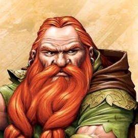

Follow the adventures of four brave heroes
Giants roam the Savage Frontier, striking fear into the hearts of all who call the North home. A ragtag group of brave adventurers is all that stands in the way of certain chaos. Will they be able to rise to the challenge?

Meet the heroes
Aaegol
Aaegol is a druid hailing from a small village north of Neverwinter. He is travelling the Savage Frontier in search of his long-lost mother and brother.
Balian
Balian, the party's ranger, left Citadel Adbar in order to uncover what happened to his former king. He now travels the lands with his companions, hoping to one day return home.
Cid
Cid has long wanted to explore the North and experience all it has to offer. With his companions at his side, Cid's journey has taken many turns and he wouldn't have it any other way.
Sprink
Sprink, the talented bard and storyteller, seeks to write the greatest adventuring tale ever told! What better way to find inspiration for the greatest story than to live it oneself?